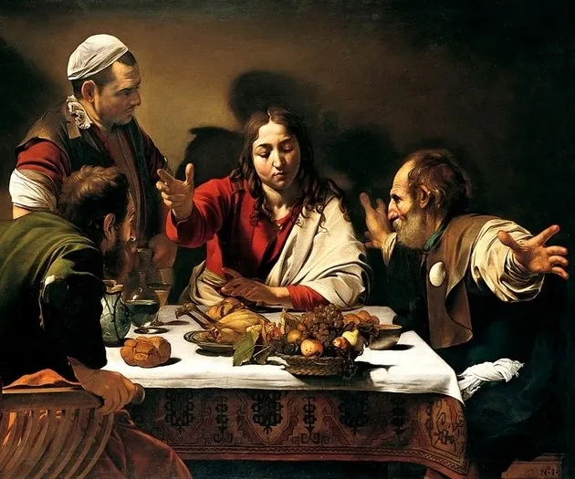
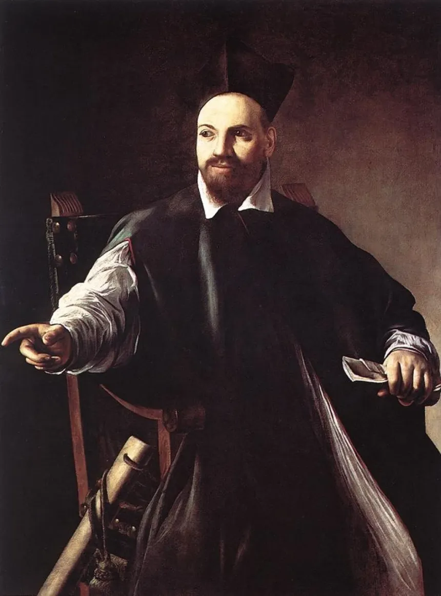
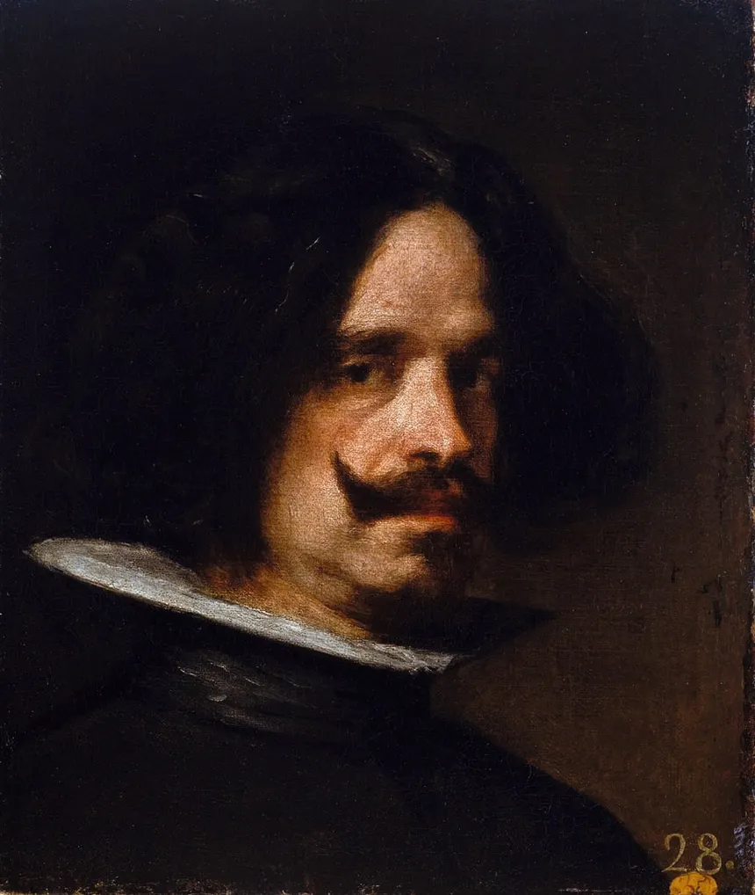
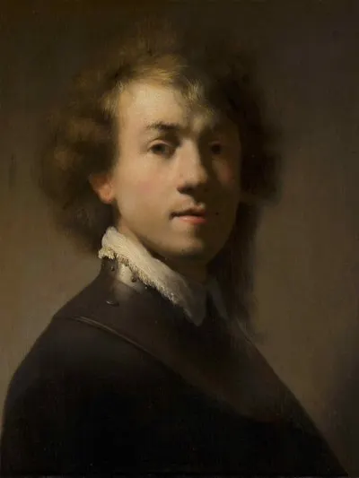
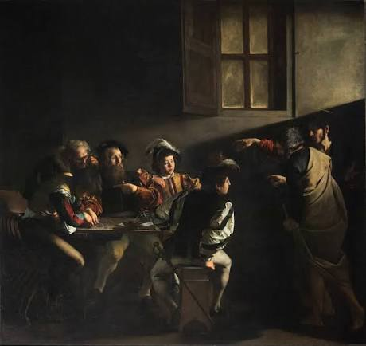
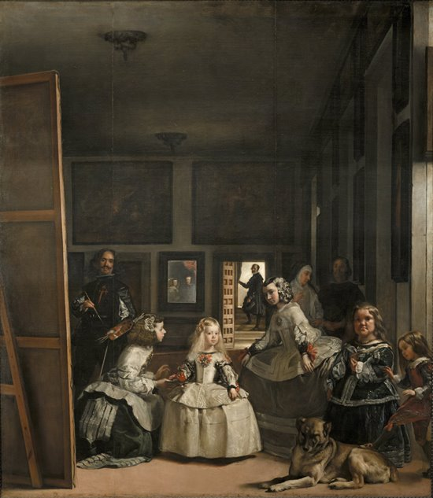
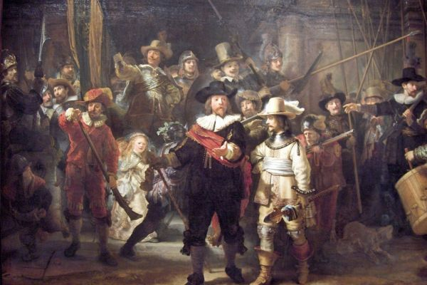

Barroco

El Barroco fue un movimiento artístico y cultural que surgió a finales del siglo XVI y se desarrolló principalmente durante el siglo XVII y principios del XVIII en Europa. Se caracterizó por representar escenas llenas de dramatismo, movimiento, emociones intensas y contrastes de luz y sombra.
Este estilo buscaba impactar al espectador mediante composiciones dinámicas, detalles abundantes y una gran expresividad. El Barroco tuvo una importante influencia en la pintura, escultura, arquitectura, música y literatura.
Características del Barroco
-
Dramatismo y emoción
- Representación de sentimientos intensos.
- Escenas que buscan conmover al espectador.
- Expresiones faciales y gestos exagerados.
-
Contraste de luz y sombra
- Uso de iluminación intensa en zonas específicas.
- Fondos oscuros para resaltar personajes.
- Creación de profundidad y dramatismo.
-
Movimiento y dinamismo
- Composiciones diagonales.
- Personajes en movimiento.
- Escenas que transmiten energía y acción.
-
Realismo
- Representación detallada de personas y objetos.
- Texturas de piel, ropa y materiales.
- Escenas de la vida cotidiana y religiosas.
-
Riqueza ornamental
- Decoraciones abundantes.
- Composiciones complejas.
- Uso de elementos elaborados y detallados.
Artistas representativos

Caravaggio (1571–1610)
Michelangelo Merisi da Caravaggio fue uno de los principales representantes del Barroco italiano. Se destacó por su estilo realista y por el uso del claroscuro, una técnica que emplea fuertes contrastes entre luz y sombra para crear dramatismo y profundidad. Sus obras suelen representar escenas religiosas con personajes de apariencia cotidiana y gran expresividad.

Diego Velázquez (1599–1660)
Diego Velázquez fue un pintor español considerado uno de los grandes maestros de la pintura barroca. Trabajó como pintor de la corte española y destacó por su capacidad para representar personajes, ambientes y objetos con gran naturalidad. Sus pinturas se caracterizan por el realismo, el manejo de la luz y la profundidad espacial.

Rembrandt van Rijn (1606–1669)
Rembrandt fue un pintor neerlandés reconocido por su extraordinario manejo de la iluminación y su capacidad para transmitir emociones. Su obra incluye retratos, escenas bíblicas y representaciones de la vida cotidiana. Utilizó la luz y la sombra para destacar los personajes y crear atmósferas profundas.
Obras destacadas

La vocación de San Mateo - Caravaggio
Esta obra representa el momento en que San Mateo es llamado por Jesús. Destaca por el uso de la luz, que dirige la mirada del espectador hacia los personajes y genera un ambiente dramático.

Las Meninas - Diego Velázquez
Es una de las pinturas más reconocidas de Velázquez. Representa a la infanta Margarita rodeada de sus acompañantes, mientras el propio pintor aparece dentro de la composición.

La ronda de noche - Rembrandt van Rijn
La pintura muestra a un grupo de milicianos en una escena llena de movimiento. Rembrandt utiliza contrastes de iluminación para destacar a los personajes principales y crear una composición dinámica.